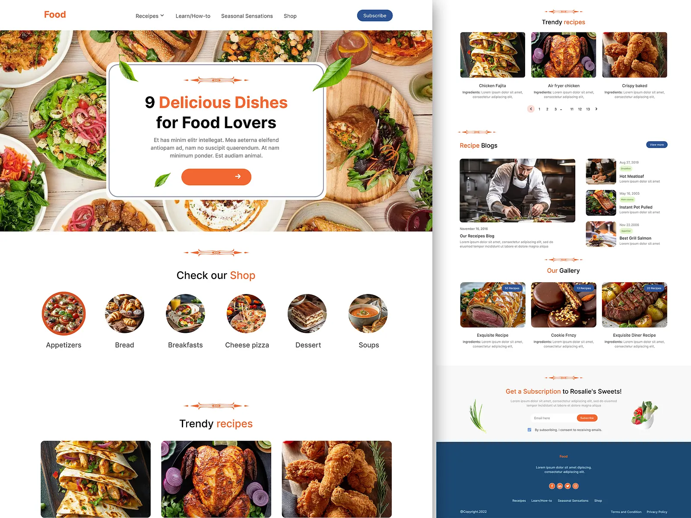

Project Report Food Recipe Webpage
NijaKitchen - Nigerian Food Recipes
Developers
Mustapha Olabode Taiye OgunleyeAbstract
Introduction
Tools and Technologies Used
Project Description
- Home: Returns the user to the homepage.
- Food: Displays a page containing a collection of different meals.
- Recipe: Shows a page listing several food recipes along with their ingredients.
- Project Report Provides detailed information about the project, the developers, and the CWW Tech Africa program.
-
Hero Section / Search Bar
-
Recipe Section
- An image or icon of the dish.
- The title of the recipe.
- A ingredient description of the meal.
- Cards are arranged in a flex layout for responsiveness.
-
Search Functionality
-
Responsive Design
UI Prototype

Features Implemented
- Header Navigation: Links to Home, Food, Recipe, and Project Report pages.
- Responsive Layout: The page adapts to different screen sizes.
- Recipe Cards: Each recipe has an image/icon, a title, and a short description.
- Search Bar: Users can filter recipes in real-time based on input keywords.
- Clean UI: Use of colors, spacing, and hover effects for better user experience.
- Hosting on GitHub Pages: Accessible live via [Food Recipe Webpage] "https://sonofgrace2203.github.io/Food-Recipe".
Challenges Faced
- Ensuring the webpage remained responsive across all screen sizes.
- Implementing the search functionality to work with both titles and descriptions.
- Managing GitHub deployment and resolving CSS file path issues.
Lessons Learned
- How to structure a webpage semantically with HTML
- The importance of CSS responsiveness using grid and flexbox.
- How to implement DOM manipulation in JavaScript.
- Team collaboration and version control with GitHub.